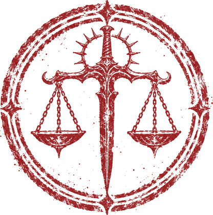
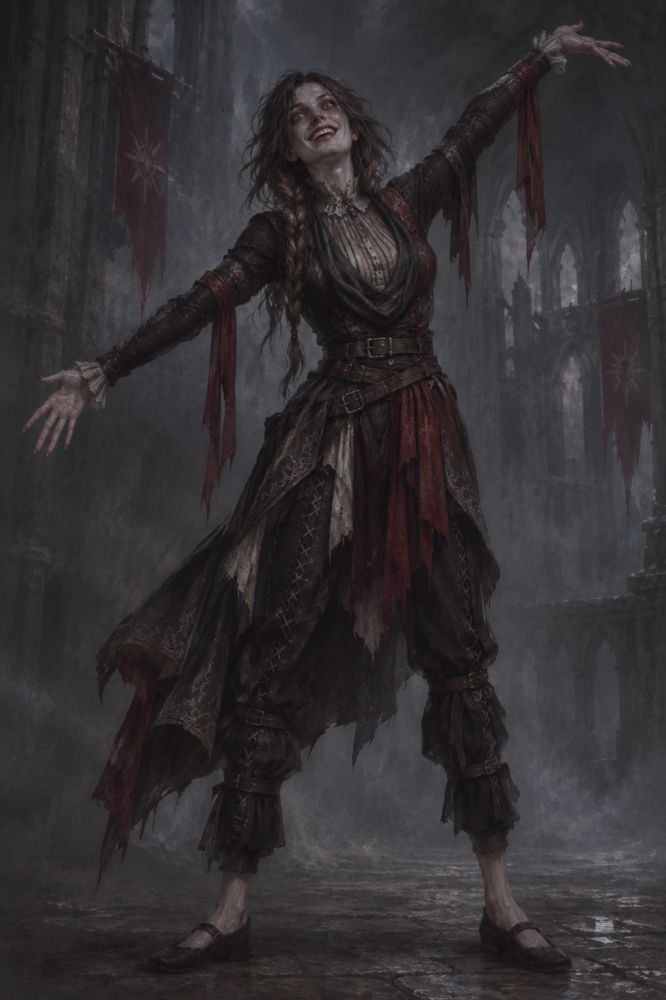

İmparatorluk Engizisyonu — Görevli Sicilleri
Oyuncu Karakterleri
One Shot — Mühür ve Vicdan
Sicil
№ I
Yeri Yağmurmızrağı
Görevli · Engizisyon

Sicil
№ II
Baelor
Görevli · Engizisyon
Sicil
№ III

Nox
Görevli · Engizisyon
Sicil
№ IV
Vespera
Görevli · Engizisyon
← Geri Dön